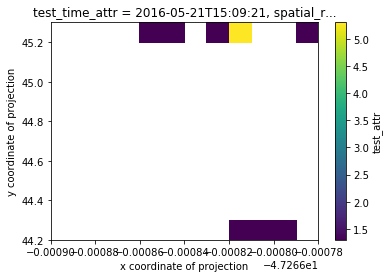
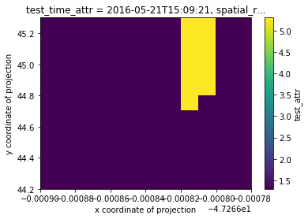

Example - Resampling Point Data¶
[2]:
import geopandas as gpd
from geocube.api.core import make_geocube
%matplotlib inline
Load in geopackage data and add CRS¶
[3]:
gdf = gpd.read_file("time_vector_data.geojson")
gdf.crs = {'init': 'epsg:4326'}
[4]:
gdf.head()
[4]:
| test_attr | test_str_attr | test_time_attr | geometry | |
|---|---|---|---|---|
| 0 | 1.3 | dcf86619 | 5/21/2016 10:09:21 AM -05:00 | POINT (-47.266811 44.219318) |
| 1 | 1.3 | dcf86619 | 5/21/2016 10:09:21 AM -05:00 | POINT (-47.266798 44.219318) |
| 2 | 1.9 | dcf86619 | 5/21/2016 10:09:21 AM -05:00 | POINT (-47.266807 44.219318) |
| 3 | 1.3 | dcf86619 | 5/21/2016 10:09:21 AM -05:00 | POINT (-47.266803 44.219318) |
| 4 | 1.3 | dcf86619 | 5/21/2016 10:09:21 AM -05:00 | POINT (-47.266794 44.219318) |
[5]:
gdf.head().plot(column='test_attr')
[5]:
<matplotlib.axes._subplots.AxesSubplot at 0x7f2206b62630>

Convert to raster with GeoCube¶
Load into grid basic¶
[6]:
geo_grid = make_geocube(
vector_data=gdf,
measurements=['test_attr', "test_time_attr"],
datetime_measurements=["test_time_attr"],
resolution=(-0.1, 0.00001),
group_by="test_time_attr",
)
/home/snowal/miniconda/envs/geocube/lib/python3.6/site-packages/xarray/core/variable.py:134: FutureWarning: Converting timezone-aware DatetimeArray to timezone-naive ndarray with 'datetime64[ns]' dtype. In the future, this will return an ndarray with 'object' dtype where each element is a 'pandas.Timestamp' with the correct 'tz'.
To accept the future behavior, pass 'dtype=object'.
To keep the old behavior, pass 'dtype="datetime64[ns]"'.
return np.asarray(pd.Series(values.ravel())).reshape(values.shape)
[7]:
geo_grid
[7]:
<xarray.Dataset>
Dimensions: (test_time_attr: 2, x: 12, y: 11)
Coordinates:
* y (y) float64 45.25 45.15 45.05 44.95 ... 44.45 44.35 44.25
* x (x) float64 -47.27 -47.27 -47.27 ... -47.27 -47.27 -47.27
* test_time_attr (test_time_attr) datetime64[ns] 2016-05-21T15:09:21 2016-05-22T15:09:22
spatial_ref int64 0
Data variables:
test_attr (test_time_attr, y, x) float64 -9.999e+03 ... -9.999e+03
[8]:
# mask nodata and plot
grid_time_1 = geo_grid.isel(test_time_attr=0)
grid_time_1.test_attr.where(grid_time_1.test_attr!=grid_time_1.test_attr.attrs['_FillValue']).plot()
[8]:
<matplotlib.collections.QuadMesh at 0x7f22049e2588>

Load into UTM grid followed by interpolation for missing values¶
[9]:
geo_grid_interp = make_geocube(
vector_data=gdf,
measurements=['test_attr', "test_time_attr"],
datetime_measurements=["test_time_attr"],
resolution=(-0.1, 0.00001),
group_by="test_time_attr",
interpolate_na_method='nearest'
)
/home/snowal/miniconda/envs/geocube/lib/python3.6/site-packages/xarray/core/variable.py:134: FutureWarning: Converting timezone-aware DatetimeArray to timezone-naive ndarray with 'datetime64[ns]' dtype. In the future, this will return an ndarray with 'object' dtype where each element is a 'pandas.Timestamp' with the correct 'tz'.
To accept the future behavior, pass 'dtype=object'.
To keep the old behavior, pass 'dtype="datetime64[ns]"'.
return np.asarray(pd.Series(values.ravel())).reshape(values.shape)
[10]:
geo_grid_interp
[10]:
<xarray.Dataset>
Dimensions: (test_time_attr: 2, x: 12, y: 11)
Coordinates:
* y (y) float64 45.25 45.15 45.05 44.95 ... 44.45 44.35 44.25
* x (x) float64 -47.27 -47.27 -47.27 ... -47.27 -47.27 -47.27
* test_time_attr (test_time_attr) datetime64[ns] 2016-05-21T15:09:21 2016-05-22T15:09:22
spatial_ref int64 0
Data variables:
test_attr (test_time_attr, y, x) float64 1.3 1.3 1.3 ... 1.3 1.3 1.3
Attributes:
creation_date: 2019-03-26 15:59:24.643054
[11]:
geo_grid_interp.test_attr.isel(test_time_attr=0).plot()
[11]:
<matplotlib.collections.QuadMesh at 0x7f2204920c88>

[ ]: